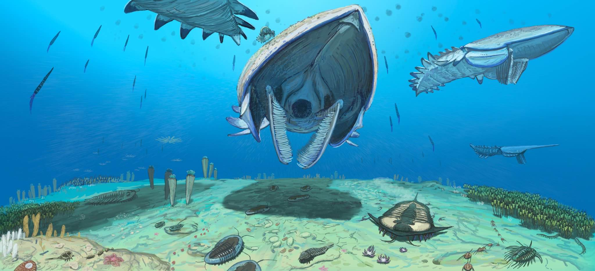

<!DOCTYPE html>
<html lang="en">
<head>
    <link rel="stylesheet" href="https://unpkg.com/leaflet@1.9.4/dist/leaflet.css" integrity="sha256-p4NxAoJBhIIN+hmNHrzRCf9tD/miZyoHS5obTRR9BMY=" crossorigin="" />
<script src="https://unpkg.com/leaflet@1.9.4/dist/leaflet.js" integrity="sha256-20nQCchB9co0qIjJZRGuk2/Z9VM+kNiyxNV1lvTlZBo=" crossorigin=""></script>
    <style> #map {position: absolute; top: 0; bottom: 0; left: 0; right: 0;}</style>
    <meta charset="UTF-8">
    <meta name="viewport" content="width=device-width, initial-scale=1.0">
    <title>Formation Map</title>
</head>
<body>
    <div id="map"></div>
    <script>
    var map =L.map('map').setView([0,0],2);
    L.tileLayer('https://api.maptiler.com/maps/dataviz/{z}/{x}/{y}.png?key=WlQcOtyrZYpWipgzrKk0', {
        attribution: '<a href="https://www.maptiler.com/copyright/" target="_blank">&copy; MapTiler</a> <a href="https://www.openstreetmap.org/copyright" target="_blank">&copy; OpenStreetMap contributors</a>',
    }).addTo(map);
    var marker = L.marker([30.611704826572094, -5.711298273821711],{
      title: "Fezouata"
    }).addTo(map).bindPopup('<h1>Fezouata Formation </h1><p>Country: Morroco<br>Age: Ordovician</p>');
    var marker = L.marker([50.613162087338594, -2.134961684703171],{
      title: "Kimmeridge Clay"
    }).addTo(map).bindPopup('<h1>Kimmeridge Clay </h1><p>Country: England (UK) <br>Age: Jurassic</p>');
    var marker = L.marker([-84.14373805169592, 169.52049078601476],{
      title: "Hanson"
    }).addTo(map).bindPopup('<h1>Hanson Formation </h1><p>Country: Antarctica (UK)<br>Age: Jurassic</p>');
    var marker = L.marker([20.722467743936676, -77.3070171286546],{
      title: "Pleistocene Cuba"
    }).addTo(map).bindPopup('<h1>Pleistocene Cuba </h1><p>Country: Cuba <br>Age: Pleistocene</p>');
    var marker = L.marker([-19.859708348935214, 44.502000607375834],{
      title: "Holocene Madagascar"
    }).addTo(map).bindPopup('<h1>Holocene Madagascar </h1><p>Country: Madagascar <br>Age: Holocene</p>');
    var marker = L.marker([-30.361823619343575, 22.508286130808585],{
      title: "Tapinocephalus Assemblage Zone"
    }).addTo(map).bindPopup('<h1>Tapinocephalus Assemblage Zone </h1><p>Country: South Africa <br>Age: Permian</p>');
    var marker = L.marker([0.9072391011698926, 35.80157423848382],{
      title: "Ngorora"
    }).addTo(map).bindPopup('<h1>Ngorora Formation </h1><p>Country: Kenya <br>Age: Miocene</p>');
    var marker = L.marker([29.79790602833107, 29.04546079527472],{
      title: "Jebel Qatrani"
    }).addTo(map).bindPopup('<h1>Jebel Qatrani </h1><p>Country: Egypt <br>Age: Eocene-Oligocene</p>');
    var marker = L.marker([-7.239643285949413, -39.41152046994259],{
      title: "Crato"
    }).addTo(map).bindPopup('<h1>Crato Formation </h1><p>Country: Brazil <br>Age: Cretaceous</p>');
    var marker = L.marker([-7.429970554254552, -75.01857668419385],{
      title: "Pebas"
    }).addTo(map).bindPopup('<h1>Pebas Formation</h1><p>Country: Brazil, Colombia, Ecuador, Peru <br>Age: Miocene</p>');
    var marker = L.marker([-29.804083047864133, -67.79466035045738],{
      title: "Chañares"
    }).addTo(map).bindPopup('<h1>Chañares Formation </h1><p>Country: Argentina <br>Age: Triassic</p>');
    var marker = L.marker([5.500846925158513, -73.49568160097971],{
      title: "Paja"
    }).addTo(map).bindPopup('<h1>Paja Formation </h1><p>Country: Colombia <br>Age: Cretaceous</p>');
    var marker = L.marker([33.59616532529229, -98.62554352709518],{
      title: "Archer City"
    }).addTo(map).bindPopup('<h1>Archer City Formation </h1><p>Country: United States <br>Age: Permian</p>');
    var marker = L.marker([44.3548524714939, -100.39038870478389],{
      title: "Pierre Shale"
    }).addTo(map).bindPopup('<h1>Pierre Shale </h1><p>Country: United States <br>Age: Cretaceous</p>');
    var marker = L.marker([34.063772000377824, -118.35631399475255],{
      title: "La Brea"
    }).addTo(map).bindPopup('<h1>La Brea Tar Pits </h1><p>Country: United States <br>Age: Pleistocene</p>');
    var marker = L.marker([39.59513408745693, -9.000824134849353],{
      title: "Guimarota"
    }).addTo(map).bindPopup('<h1>Alcobaça Formation (Guimarota) </h1><p>Country: Portugal <br>Age: Jurassic</p>');
    var marker = L.marker([45.888794637449394, 8.889514225976285],{
      title: "Besano"
    }).addTo(map).bindPopup('<h1>Besano Formation </h1><p>Country: Italy <br>Age: Triassic</p>');
    var marker = L.marker([50.01998375755653, 10.668270609021704],{
      title: "Bromacker Quarry"
    }).addTo(map).bindPopup('<h1>Tambach Formation (Bromacker) </h1><p>Country: Germany <br>Age: Permian</p>');
    var marker = L.marker([50.056930666422716, 7.436062626984949],{
      title: "Hunsrück Slate"
    }).addTo(map).bindPopup('<h1>Hunsrück Slate </h1><p>Country: Germany <br>Age: Devonian</p>');
    var marker = L.marker([49.521838860157914, 7.4402019682614196],{
      title: "Remigiusberg"
    }).addTo(map).bindPopup('<h1>Remigiusberg Formation </h1><p>Country: Germany <br>Age: Permian</p>');
    var marker = L.marker([50.831182824322724, 12.94285222123031],{
      title: "Chemnitz Petrified Forest"
    }).addTo(map).bindPopup('<h1>Leukersdorf Formation (Chemnitz Petrified Forest)</h1><p>Country: Germany <br>Age: Permian</p>');
    var marker = L.marker([34.099741332678136, 35.701002567643485],{
      title: "Sannine"
    }).addTo(map).bindPopup('<h1>Sannine Formation </h1><p>Country: Lebanon <br>Age: Cretaceous</p>');
    var marker = L.marker([40.09320539099858, 70.18271298503566],{
      title: "Madygen"
    }).addTo(map).bindPopup('<h1>Madygen Formation </h1><p>Country: Kyrgyztan, Taijikistan, Uzbekistan <br>Age: Triassic</p>');
    var marker = L.marker([33.70436767889714, 72.16648842880363],{
      title: "Kuldana"
    }).addTo(map).bindPopup('<h1>Kuldana Formation </h1><p>Country: Pakistan <br>Age: Eocene</p>');
    var marker = L.marker([41.539556369939054, 121.2435756042538],{
      title: "Yixian"
    }).addTo(map).bindPopup('<h1>Yixian Formation </h1><p>Country: China <br>Age: Cretaceous</p>');
    var marker = L.marker([-22.373979732696156, 143.03721390682017],{
      title: "Winton"
    }).addTo(map).bindPopup('<h1>Winton Formation </h1><p>Country: Australia <br>Age: Cretaceous</p>');
    var marker = L.marker([-19.02884061749854, 138.73982886329912],{
      title: "Riversleigh"
    }).addTo(map).bindPopup('<h1>Riversleigh (Faunal Zone C) </h1><p>Country: Australia <br>Age: Oligocene-Miocene</p>');
    var marker = L.marker([55.98526602415578, -4.276740929709632],{
      title: "Ballagan"
    }).addTo(map).bindPopup('<h1>Ballagan </h1><p>Country: Scotland, England (UK) <br>Age: Carboniferous</p>');
    var marker = L.marker([36.555985212596966, 118.69119349644467],{
      title: "Shanwang"
    }).addTo(map).bindPopup('<h1>Shanwang Formation </h1><p>Country: China <br>Age: Miocene</p>');
    var marker = L.marker([48.19739388234848, 14.215816566499768],{
      title: "Austrian Paratethys"
    }).addTo(map).bindPopup('<h1>Austrian Paratethys </h1><p>Country: Austria <br>Age: Miocene</p>');
    var marker = L.marker([41.32621819098438, -88.37050801641138],{
      title: "Mazon Creek"
    }).addTo(map).bindPopup('<h1>Mazon Creek Fossil Beds </h1><p>Country: United States <br>Age: Carboniferous</p>');
    var marker = L.marker([-22.167666684254414, 140.84164209245336],{
      title: "Toolebuc"
    }).addTo(map).bindPopup('<h1>Toolebuc Formation </h1><p>Country: Australia <br>Age: Cretaceous</p>');
    var marker = L.marker([ 39.40359901613482, -83.59843529165065],{
      title: "Cleveland Shale"
    }).addTo(map).bindPopup('<h1>Cleveland Shale </h1><p>Country: United States <br>Age: Devonian</p>');
    var marker = L.marker([ 49.97350392228259, 6.052610171828547],{
      title: "Consthum Lagerstätte"
    }).addTo(map).bindPopup('<h1>Consthum Lagerstätte</h1><p>Country: Luxembourg <br>Age: Devonian</p>');
    var marker = L.marker([ 37.4396394036586, 110.62931240832916],{
      title: "Ermaying Formation"
    }).addTo(map).bindPopup('<h1>Ermaying Formation </h1><p>Country: China <br>Age: Triassic</p>');
    //testing size img popup fix
    document.querySelector(".leaflet-popup-pane").addEventListener("load", function (event) {
	var target = event.target,
  		tagName = target.popupimg,
      popup = map._popup;
      
  console.log("got load event from " + tagName);
  
  if (tagName === "IMG" && popup) {
  	popup.update();
  }
}, true); // Capture the load event, because it does not bubble.

</script>

</body>
</html>
